Rama
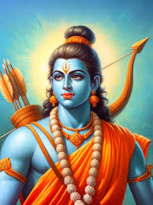Role:
Prince of Ayodhya, Avatar of Vishnu
Key Traits:
Ideal King, Hero, Devotee of Dharma
Symbolism:
Dharma (Righteousness), Truth, Justice
Background:
Rama is the eldest son of King Dasharatha of Ayodhya and Queen Kausalya. He is the seventh incarnation of Lord Vishnu, born to destroy evil and restore righteousness. Known for his unwavering commitment to dharma (righteousness), Rama is a figure of great virtue, courage, and loyalty. He is a skilled warrior and a compassionate leader.
Sita
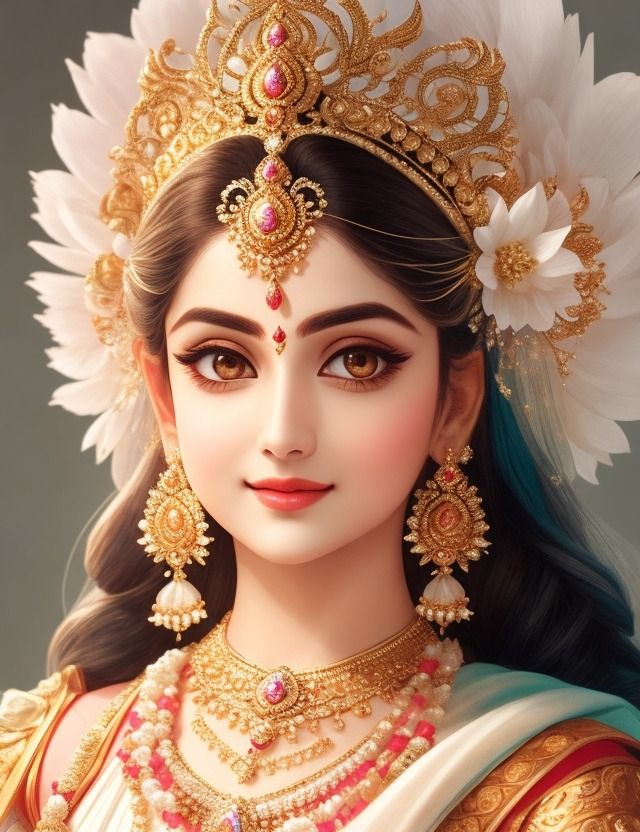Role:
Princess of Mithila, Wife of Rama, Avatar of Goddess Lakshmi
Key Traits:
Loyalty, Courage, Purity, Devotion
Symbolism:
Patience, Sacrifice, Purity, Strength
Background:
Sita is the daughter of King Janaka of Mithila. Known for her immense devotion to Rama and her unwavering faith in love and loyalty.
Ravana
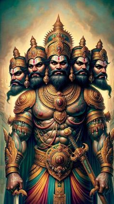Role:
King of Lanka, Demon King, Scholar
Key Traits:
Intelligence, Power, Pride, Ambition
Symbolism:
Ego, Pride, Desire for Power
Background:
Ravana is the king of Lanka and a mighty demon king, known for his intelligence and devotion to Lord Shiva but flawed by pride and ambition.
Lakshmana
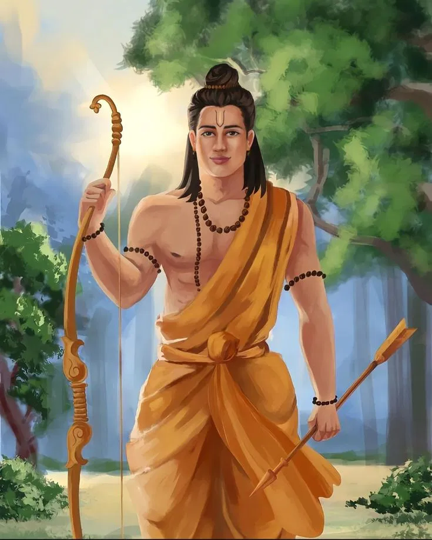Role:
Brother of Rama
Key Traits:
Loyalty, Strength, Devotion
Symbolism:
Devotion to Duty, Brotherhood
Background:
Known for accompanying Rama in exile and protecting Sita during their journey.
Hanuman
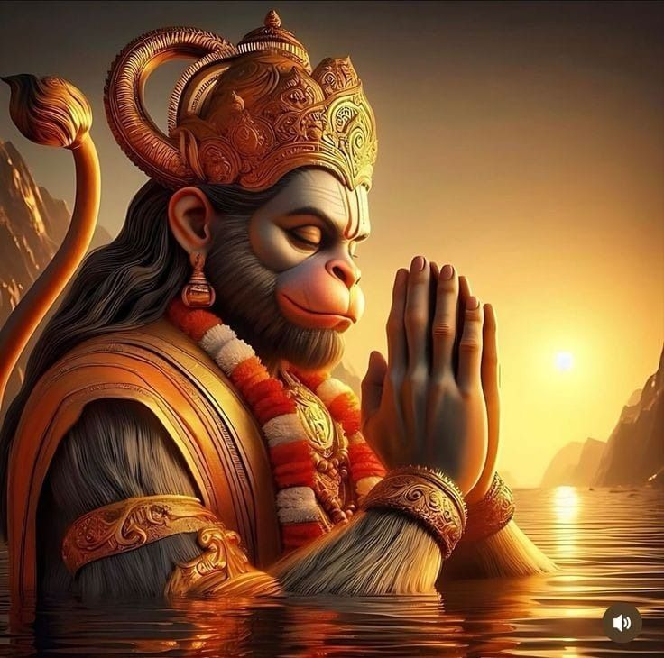Role:
Devotee of Rama, Warrior of the Vanara Army
Key Traits:
Strength, Devotion, Intelligence
Symbolism:
Devotion to Duty, Brotherhood
Background:
Hanuman is the son of the wind god Vayu and a vanara (monkey). A loyal devotee of Rama, he possesses immense strength, wisdom, and a pure heart.
Dasharatha

Role:
King of Ayodhya, Father of Rama
Key Traits:
Generosity, Love for Family
Symbolism:
Devotion to Duty, Brotherhood
Background:
Dasharatha is the noble king of Ayodhya and the father of Rama, Lakshmana, Bharata, and Shatrughna. He is remembered for his love for Rama and his tragic death after being forced to exile him.
Bharata
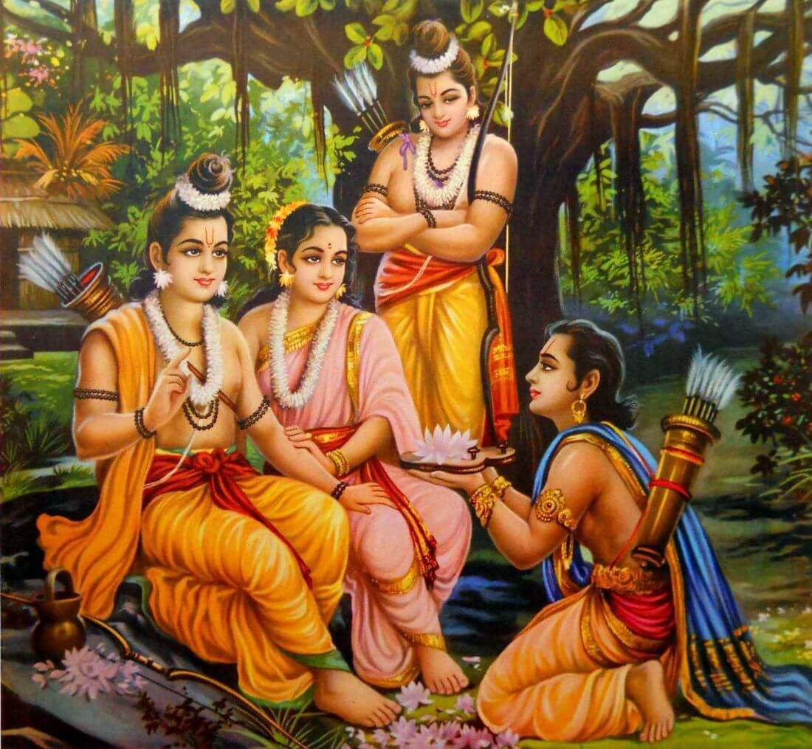Role:
Younger Brother of Rama, Temporary King of Ayodhya
Key Traits:
Humility, Integrity, Love for Family
Symbolism:
Renunciation, Selflessness
Background:
Bharata is the son of Dasharatha and Queen Kaikeyi. Though his mother schemes to make him king, Bharata remains deeply devoted to Rama and refuses to accept the throne.
Shatrughna
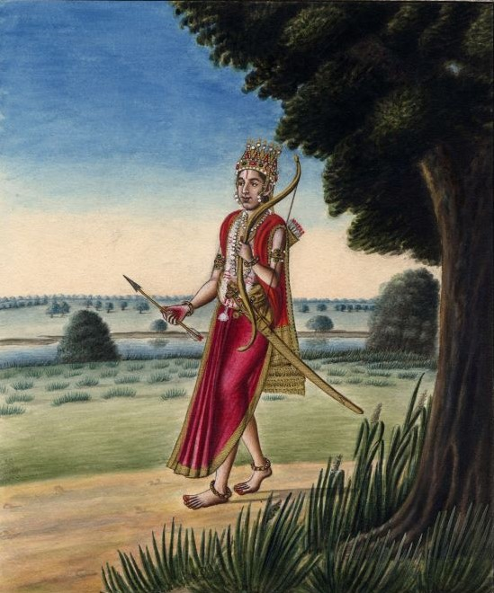Role:
Youngest Brother of Rama, Supporter of Bharata
Key Traits:
Obedience, Loyalty, Strength
Symbolism:
Silent Strength, Support
Background:
Shatrughna is the son of Dasharatha and Queen Sumitra. Often in the background, he supports Bharata and fulfills his responsibilities with dedication.
Kaikeyi
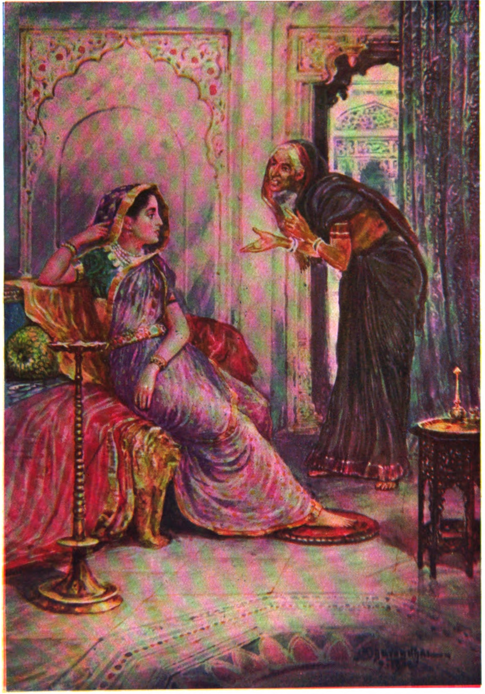Role:
Queen of Ayodhya, Mother of Bharata
Key Traits:
Ambition, Love for Son, Regret
Symbolism:
Human Flaws, Redemption
Background:
Kaikeyi is one of Dasharatha's queens. Her love for Bharata and fear of losing his future lead her to demand Rama’s exile.
Kaushalya
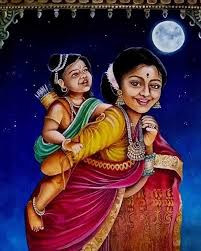Role:
Mother of Rama, Queen of Ayodhya
Key Traits:
Compassion, Devotion, Wisdom
Symbolism:
Motherly Love
Background:
Kaushalya is the chief queen of Dasharatha and the mother of Rama. She represents selfless love and devotion to her family.
Sugriva
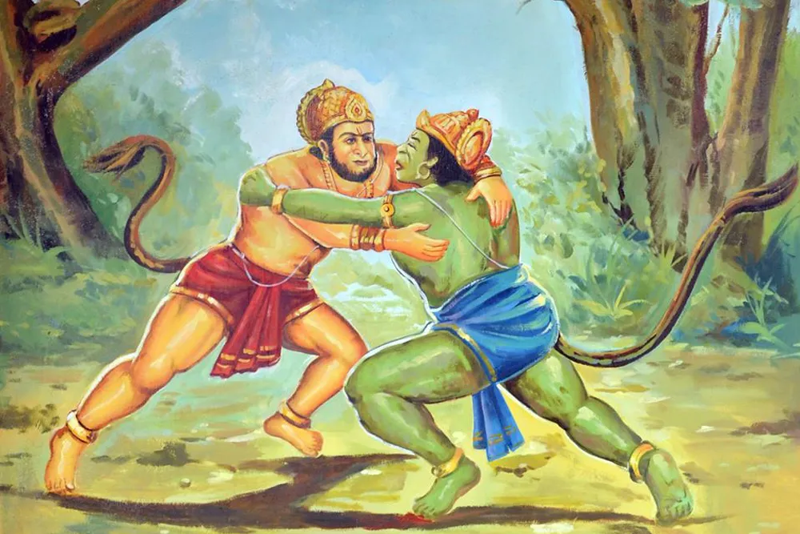Role:
King of the Vanaras, Ally of Rama
Key Traits:
Gratitude, Friendship, Strategy
Symbolism:
Justice, Friendship, Loyalty
Background:
Sugriva, the vanara king, forms an alliance with Rama to reclaim his kingdom from his brother Vali.Thereafter,out of gratitude he along with his vanara army help Rama fight against Ravana
Vibhishana
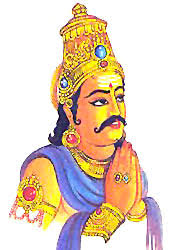Role:
Younger Brother of Ravana, King of Lanka
Key Traits:
Righteousness, Diplomacy, Loyalty to Dharma
Symbolism:
Good amidst Evil
Background:
Vibhishana is Ravana's brother who opposes his wickedness. He joins Rama's side, ultimately helping defeat Ravana.
Janaka
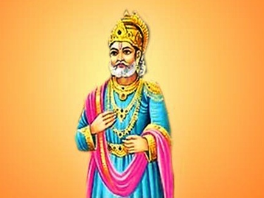Role:
King of Mithila, Father of Sita
Key Traits:
Wisdom, Detachment, Compassion
Symbolism:
Enlightenment, Fatherly Love
Background:
Janaka is Sita’s father and a philosopher-king. He raises Sita with great love and wisdom.
Shurpanakha
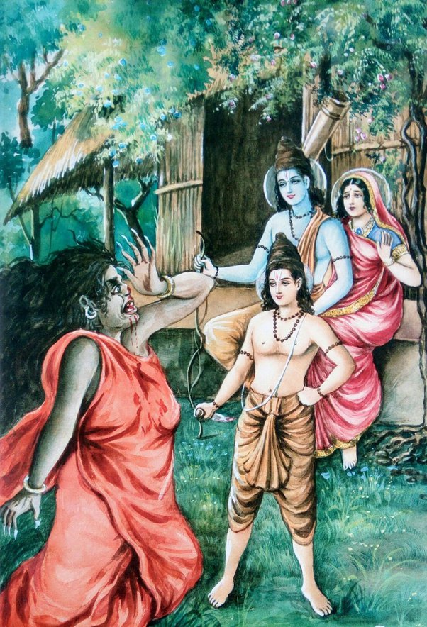Role:
Sister of Ravana, Instigator of Conflict
Key Traits:
Manipulation, Revenge, Desire
Symbolism:
Jealousy, Greed
Background:
Shurpanakha is the sister of Ravana. Her infatuation with Rama and subsequent humiliation lead her to incite Ravana to abduct Sita.
Indrajit (Meghnad)
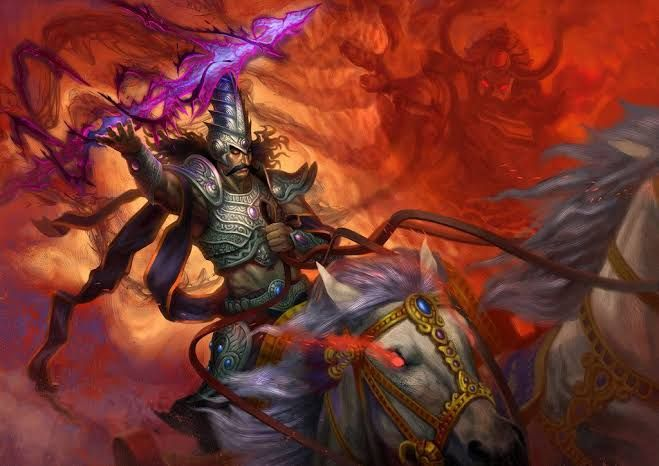Role:
Son of Ravana, Powerful Warrior
Key Traits:
Bravery, Skill, Arrogance
Symbolism:
Power without Dharma
Background:
Indrajit is Ravana’s son, known for his mastery of warfare and magical powers. Despite his might, his arrogance leads to his downfall.
Kumbhakarna
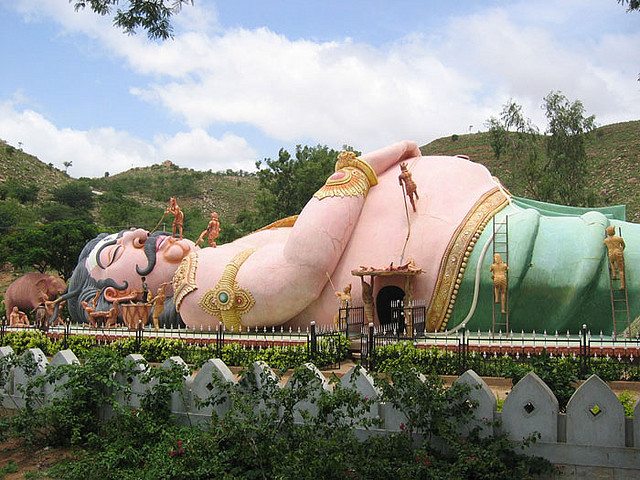Role:
Brother of Ravana, Giant Demon
Key Traits:
Strength, Loyalty, Devotion to Family
Symbolism:
Misguided Loyalty
Background:
Kumbhakarna is Ravana’s brother, cursed to sleep for long periods. Despite recognizing Ravana’s flaws, he fights for him out of loyalty.
Jatayu
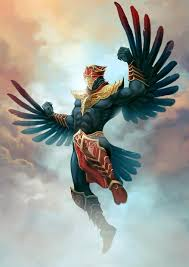Role:
Divine Bird, Ally of Rama
Key Traits:
Courage, Loyalty, Sacrifice
Symbolism:
Selfless Sacrifice
Background:
Jatayu is a noble bird and a friend of Dasharatha. He tries to rescue Sita from Ravana but is fatally wounded in the process.
Mandodari
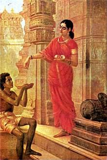Role:
Wife of Ravana, Queen of Lanka
Key Traits:
Wisdom, Devotion, Compassion
Symbolism:
Virtuous Womanhood
Background:
Mandodari is Ravana’s devoted wife and a wise queen. Despite her husband’s flaws, she remains loyal and advises him to follow dharma.